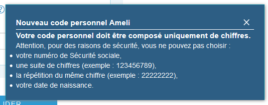
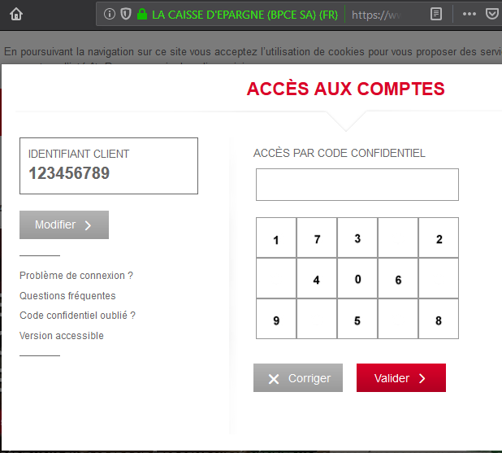
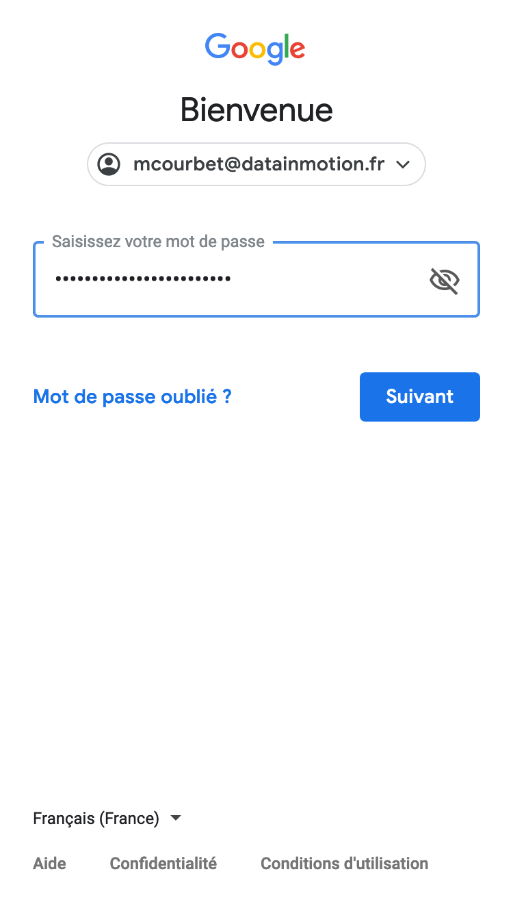
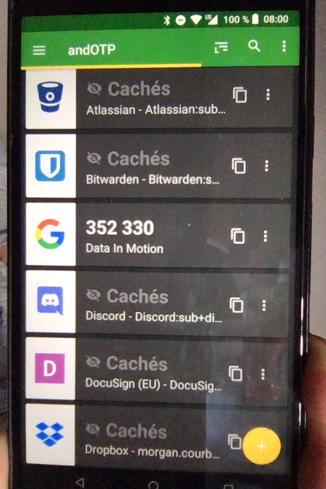

Les mots de passe
…ou comment s’en débarasser
Morgan Courbet
25 septembre 2019
Histoire
“Sésame, ouvre-toi !”
ubisoft.com

ameli.fr

caisse-epargne.fr

Les mots de passe sont un problème
Compliqués à retenir
Pénibles à saisir

Conséquence
Mots de passe faibles
complexité à retenir
+
pénibilité à saisir
+
(humains fainéants)
=
mots de passe faible
Liste des mots de passe les plus utilisés en 2018
123456password1234567891234567812345
Source: https://gizmodo.com/the-25-most-popular-passwords-of-2018-will-make-you-fee-1831052705
Mots de passe faillibles
- Méthodes de capture variées
- Secret partagé
- Réutilisation
- Difficulté de se souvenir d’un nouveau mot de passe
Conséquence
- Vol d’identité
- Vol d’argent
- Fuite d’informations médicales
- etc.
“Ça n’arrive qu’aux autres”
- FAUX !
- Faites le test sur https://haveibeenpwned.com/
Solution
Une meilleure solution : le gestionnaire de mots de passe
- Fonctionnalités principales
- Stocke les mots de passe
- Sécurisé
- Protégé par un mot de passe fort
- Génère des mots passe longs et forts
- Exemple :
H}eb<)5)F[fXb!(#"hVa-
- Exemple :
Gestionnaire de mots de passe
- Fonctionnalités accessoires
- Synchronisation entre plusieurs appareils
- Remplissage automatique des formulaires
- Partage de mot de passe (conjoint·e)
- Changement de mot de passe en un clic
Quelques gestionnaires
Démonstration
Encore plus sécurisé
Two-factor authentication (2FA)
- Demande un deuxième élément d’identification, en plus du mot de passe
- Parade contre le vol de mot de passe
One-time Password (OTP)


Universal 2nd Factor (U2F)